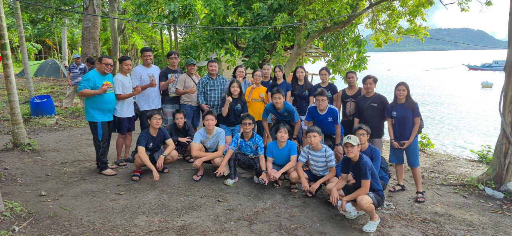

Program Kami
Program kerja Greenpact dirancang untuk mengubah kepedulian terhadap lingkungan menjadi aksi nyata. Melalui edukasi, penelitian, kolaborasi, dan pengabdian kepada masyarakat, setiap program memberikan kesempatan bagi generasi muda untuk menciptakan dampak yang berkelanjutan

Penanaman dan Penelitian Rumput Laut dengan BRIN
Pada tanggal 23-25 Oktober lalu, tim dari Greenpact society melakukan pelatihan budidaya rumput laut yang dibimbing oleh tim Badan...

Hari Lingkungan Sedunia - Anyer
Greenpact pergi ke Anyer untuk merayakan hari lingkungan sedunia. Di Anyer...

Workshop AMSA X GP
Greenpact bersama dengan AMSA memberikan edukasi terhadap masyarakat tentang paru-paru. Ada seminar...

Webinar GP X Mortier
Webinar yang diadakan oleh Greenpact bersama Mortier, dan mengundang Kak Irene, salah satu founder Mortier sebagai...

Pengunjungan Pabrik Mortier
Greenpact mengunjungi langsung pabrik mortier yang ada di bekasi untuk...

Pameran bukantentangsampah
Greenpact diundang untuk datang ke pameran yang diadakan oleh tim “bukantentangsampah” di Erasmus Huis. Pada...


Penanaman dan Penelitian Rumput Laut dengan BRIN
Pada tanggal 23-25 Oktober lalu, tim dari Greenpact society melakukan pelatihan budidaya rumput laut yang dibimbing oleh tim Badan Riset dan Inovasi Nasional (BRIN) di Desa Selesung, Pulau Legundi. Team Greenpact menerapkan metode polikultur, vertikultur, long line, dan kantong. Dari pelatihan ini, Greenpact berhasil memperoleh hasil tanam sekitar 87,6 kg rumput laut.
Key Highlights
- Kolaborasi dengan BRIN
- Penelitian
- Menanam 87.6kg rumput laut

Hari Lingkungan Sedunia - Anyer
Greenpact pergi ke Anyer untuk merayakan hari lingkungan sedunia. Di Anyer, Greenpact melakukan bermain dan belajar bersama anak-anak lokal di Anyer, seperti belajar proses pembuatan kompos sampai aktivitas ecoprint. Dalam rangka merayakan hari lingkungan sedunia, Greenpact juga menanam pohon di ….
Key Highlights
- Hari Lingkungan Sedunia
- Belajar proses pembuatan kompos
- Belajar Aktivitas Ecoprint


Workshop AMSA X GP
Greenpact bersama dengan AMSA memberikan edukasi terhadap masyarakat tentang paru-paru. Ada seminar yang dibawakan dari tim AMSA dan juga dari Greenpact menghadirkan beberapa booth untuk edukasi mulai dari cara menjaga agar udara tetap bersih, tanaman yang dapat menyaring udara dengan bersih, dan berbagai booth edukatif lainnya.
Key Highlights
- AMSA X GP
- Workshop Edukatif
- Memberi edukasi tentang paru-paru ke masyarakat


Webinar GP X Mortier
Webinar yang diadakan oleh Greenpact bersama Mortier, dan mengundang Kak Irene, salah satu founder Mortier sebagai narasumber. Pada webinar ini diajarkan tentang bagaimana Mortier mengolah sampah plastik menjadi produk yang dapat digunakan lagi.
Key Highlights
- GP X Mortier
- Webinar Edukatif
- Pengolahan Sampah


Pengunjungan Pabrik Mortier
Greenpact mengunjungi langsung pabrik mortier yang ada di bekasi untuk belajar dan mencoba bagaimana mendaur ulang sampah-sampah plastik menjadi barang yang berfungsi. Tim greenpact belajar membuat cardholder, carabiner dari sampah plastik
Key Highlights
- Pabrik Mortier
- Belajar Mendaur Ulang Sampah
- Pengolahan Plastik Menjadi Barang


Pameran bukantentangsampah
Greenpact diundang untuk datang ke pameran yang diadakan oleh tim “bukantentangsampah” di Erasmus Huis. Pada pameran ini Greenpact diajak bermain kartu tentang daur ulang, dan belajar tentang bagaimana kondisi sampah dan lingkungan sekitar kita.
Key Highlights
- Pameran di Erasmus Huis
- Diadakan tim "bukantentangsampah"
- Kondisi sampah dan lingkungan sekitar kita
Ikuti Kami
Jadilah bagian dari gerakan Greenpact. Bersama, kita dapat menciptakan perubahan nyata melalui aksi lingkungan, inovasi, dan kolaborasi demi masa depan yang lebih berkelanjutan.